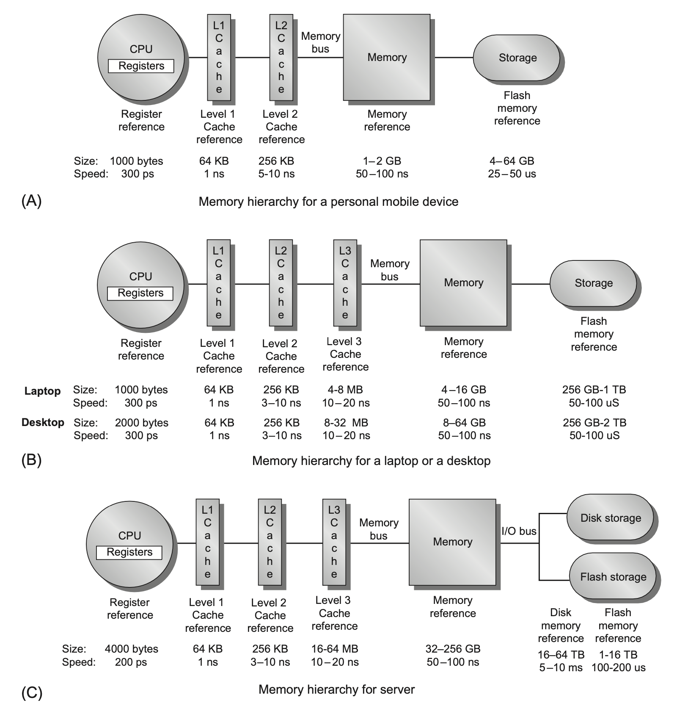
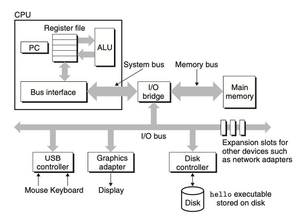

ISA is an interface between hardware and software; historically, CISC dominated the industry due to [reasons]; in recent years, RISC has become more popular due to [reasons]
Important things to consider here: instruction formats, addressing modes, registers
MH is an economic way to create 'unlimited fast memory'. It is possible due to the principle of locality (temporal and spatial) and cost-performance trade-offs of current memory technologies.
It consists of multiple levels of memory, starting from fast but expensive to cheap but slow: registers, cache, main memory, disk, distributed file systems.
Important things to consider here: cache coherence, memory management, virtual memory.
Notable that advances in processor performance led to increased importance of MH. Specifically, processor can handle much more instructions per unit time than memory can provide, so MH is used to keep processor as busy as possible. Also notable that lack of single core processor performance improvements caused the gap growth to slow down.
This where multiple cores processors come into play. As the number of cores grow, the gap between CPU memory demand and DRAM band-width continues to grow again. Intel Core i7 6700 with four cores and a 4.2 GHz clock rate has peak data bandwidth of 256 GB/s and peak instruction bandwidth of 204.8 GB/s; so, total theoretical peak bandwidth is 460.8 GB/s. In contrast, the peak bandwidth for DRAM main memory, using a dual-channel DDR4 memory controller, is 34.1 GB/s.
Theoretical peak data memory references: 2 * 4 * 4.2 billion = 33.6 billion references/second
Data bandwidth: 32 billion * 8 bytes = 268.8 GB/s
For instructions: 12.8 billion * 16 bytes (128 bits) = 204.8 GB/s (peak instruction demand of about 12.8 billion 128-bit instruction references)
Total theoretical peak bandwidth: 268.8 GB/s + 204.8 GB/s = 473.6 GB/s (441 GiB/s)
Traditionally, designers of memory hierarchies focused on optimizing average memory access time, which is determined by the cache access time, miss rate, and miss penalty. More recently, however, power has become a major consideration.
When a word is not found in the cache, the word must be fetched from a lower level in the hierarchy (which may be another cache or the main memory) and placed in the cache before continuing. Multiple words, called a block (or line), are moved for efficiency and locality reasons. Depending on its placement, cache can be seen as n-way associative set-associative, direct-mapped, or fully-associative.
Caching reads is easy, but caching writes is more difficult. There are three strategies: write-through and write-back.
On cache level, a preferred measure of performance is miss rate or misses per instruction. On a memory level, a better measure is average memory access time. On a processor level, execution time is usually what matters.
It has the following stages: Fetch, Decode, Execute, Memory Access, Write Back.
Important things to consider here: hazards (structural, data, control), instruction-level parallelism.
Multiple processors working simultaneously.
Important things to consider here: types (SIMD, MIMD, Multicore processors), thread-level parallelism.
Devices that connect to the computer system.
Important things to consider here: types, performance considerations.
Important things to consider here: instruction-level parallelism, memory hierarchy, parallel processing.
Important things to consider here: power consumption, energy efficiency.
